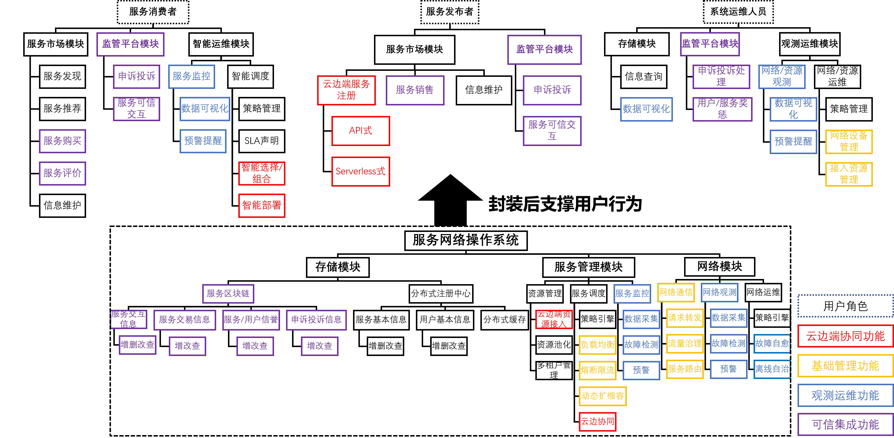
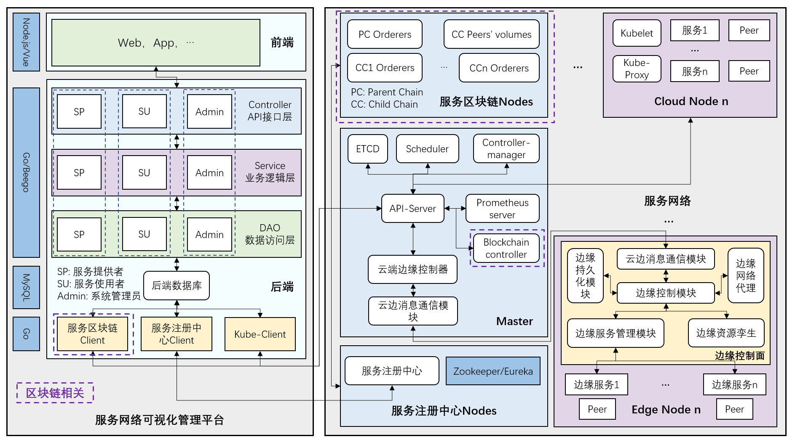
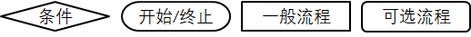
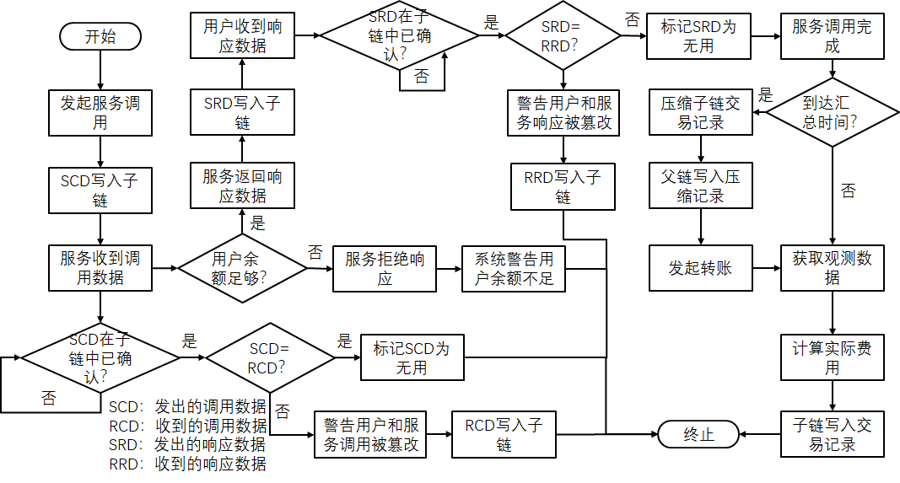
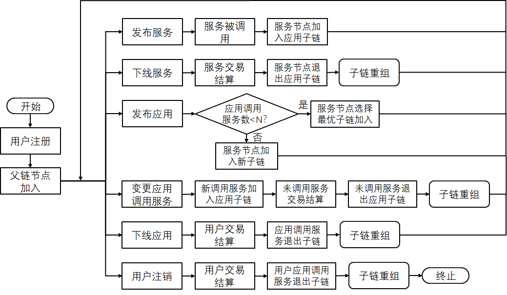
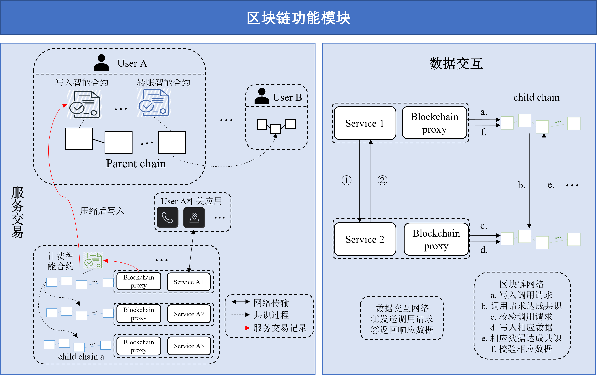

概要设计-区块链
概要设计 - 区块链
需求背景
讲清楚为什么要做这个需求（不要写因为老师安排你做了这个需求所以你做这个需求，而是结合你的调研情况，讲清楚在什么样的产业需求情况，引发了老师安排你做或者你主动规划做这个需求）
传统服务交互问题
服务实体可信度保障机制不完善
服务交互中涉及的主要实体有服务、服务提供者和服务使用者。
服务本身的QoS和输出结果无法保证可信：一方面服务无法保证在延迟、响应成功率等QoS指标满足声称的SLA；另一方面服务执行过程对用户而言是一个黑箱，无法保证输出结果完全正确，符合服务使用者需求。
服务提供者的可信主要体现在其提供的服务是否可信。首先服务本身可信缺失，其次同一服务提供者的多个服务之间以及不同服务提供者之间相对独立，服务使用者无法对其进行较为全面地信任分析与决策。
服务使用者的可信主要体现在其在使用服务时不存在恶意行为，例如欠费和DDoS攻击等。目前各平台间并没有统一的判定标准，且由于平台间相互独立，某恶意用户在被A平台判定为恶意后其他平台无法感知。
服务实体间数据交互可信保障机制不完善
数据可能丢失：传统的数据存储和安全系统高度集中，这意味着存在单点故障。也就是对中央服务器的任何外部攻击，如恶意软件或暴力破解尝试，都可能导致存储数据的部分或全部丢失。根据存储在系统中的数据类型，数据丢失的后果可能对企业甚至经济造成毁灭性的影响。现有的服务网络仍然依托于现有的传统数据库，没有对服务共享，服务数据调用过程中的数据加以保护，不满足用户对于信息完整性的需求；因此需要新的架构来实现对信息完整性的保护。
数据可能被篡改：服务的种类多种多样，在金融领域，数字版权领域，公益领域等，诸如此类需要多方参与，多方认证的数据，由于经过的机构复杂，认证过程复杂，并且一些核心的数据需要保证数据不可更改。在服务共享领域，服务提供方有权要求在共享的服务数据使用过程中不被篡改，对于防篡改的特性，现有的传输方式，只能通过严格的认证方式感知数据是否被篡改，而不能保证不出现篡改的结果。
现有BaaS和服务网络结合存在鸿沟，使用成本较高
由于区块链和智能合约需要用户自定义，自定义区块链和智能合约所以需要的成本比较高，实现服务数据之间的可信交互成本提高，目前没有一个针对服务交互场景下适用的智能合约，是可信交互难以广泛推广的瓶颈之处。
传统服务交易问题
结算模式无法保障服务使用者权益
传统服务交易结算对服务实际运行质量缺乏全面考量，也缺乏灵活性，无法满足使用者个性化的QoS需求和跨供应商的服务自主选择权。以阿里云、华为云和AWS为例，其SLA只对服务可用性做了一定保证，而没有考虑延迟、吞吐量等指标；如果未满足SLA，它们采取事后补偿的方式返还服务使用者一定比例的金额，补偿依据的只是服务提供者单方面的监控指标，且这些金额是供应商绑定的（即退款只能用于使用同一服务提供者的服务）。
简化交易流程
对于服务请求方来说，服务请求方希望与服务提供方以一种简单便捷的方式来实现服务请求与调用的双方认证与消费，传统的服务交易的安全性取决于第三方的支付平台，依赖性强。如果可以省略第三方，会极大简化交易流程，给交易双方带来便捷。
减小交易风险
第三方支付企业在数据安全方面，一向采用的是数据中心的支付方式，所有信息被统一存在中心数据库，可能存在黑客或者其他人员篡改数据库的情况，因为大型数据中心所存留的数据量很庞大，一旦被篡改，所造成的后果不可估量。
区块链性能问题
服务网络场景下存在海量异构服务和众多服务提供者以及使用者，使用区块链存储关键数据实现服务可信交互与交易固然能够保障数据安全性，提升交易交互流程便捷性；但该场景下节点数量规模大会产生频繁的区块链交易请求以及大量需要写入区块链的数据，这对区块链本身的TPS和可扩展性提出了很高的要求，现有的区块链应用并不能很好地解决上述性能问题。
需求价值
讲清楚这个需求做了之后，前面的需求背景中提到的当前业界面临的哪些痛点问题就可以解决掉了。
服务交互数据安全、实体可信、使用便捷
区块链的去中心化结构能够保证区块链上的所有节点维护相同的数据，意味着，只要区块链上有一个节点是稳定运行的，区块链上的数据就不会丢失，能够完整保存，保证了区块链上的数据是相对安全的。如果要修改区块链中的信息，必须征得半数以上节点的同意并修改所有节点中的信息，而这些节点通常掌握在不同的主体手中，因此篡改区块链中的信息是一件极其困难的事。通过使用区块链作为传输的中间节点，使得数据交互双方能够通过区块链中的节点来验证传输前后的数据是否被更改，严格保证交互数据的安全性和防篡改。
通过服务QoS以及用户评价上链，在此基础上对服务和用户进行信任建模，可以一定程度上保证服务交互过程中多方实体的可信。
通过将服务交互流程以智能合约的形式上链，提供给用户serverless式的无感区块链服务，可以最大限度降低用户使用区块链的成本。
服务交易安全可靠、流程简化
有关服务交易的相关信息是比较重要的信息，所以服务交易相关的信息会存储到区块链中，通过服务交易信息上链的方式，可以实现交易记录安全存储，不可篡改且可以溯源；通过将服务交易流程写入智能合约，可以实现服务QoS智能感知的服务自动交易，极大简化了交易流程；通过将服务可信交互过程以智能合约实现以及将用户调用的服务自组织为区块链，可以实现自动化的区块链部署和服务间传输数据上链，免去了用户运维区块链和开发智能合约的负担，使得开发和部署变得简单易用。
服务区块链TPS高、可扩展性好
向区块链中写入数据代价高，耗时长；大规模可信服务网络平台通过建立父链-子链的双层区块链架构，将元数据写入子链，将整合后的元数据打包写入父链，使得写入的过程更加高效；当服务数量增多，服务数据需要高频、大量写入的时候，可以突破大规模场景下区块链的效率瓶颈。
需求功能描述
讲清楚你的这个需求，做完之后，具体实现了那几条功能，注意这个和第二点需求价值的区别，需求价值是讲你通过这个需求实现，解决了哪些痛点问题，而需求功能描述是指具体到软件工程语言的，你所实现的基本功能条目，言简意赅、精准描述。
节点管理功能
子链：区块链节点为服务消费者调用的服务，多个服务以应用为粒度组成一条子链（若应用调用服务数量太少则按照子链节点自组织规则合并加入已有子链），存储服务间传输数据（实现服务间可信交互）以及服务QoS（实现服务消费者与服务间可信交互）和每次调用产生的费用（为父链实现服务交易做准备）。应用交互网络
父链：区块链节点为服务消费者和服务发布者，存储服务QoS、服务评价（摘要）（实现服务消费者与服务间可信交互）和实际转账记录（实现服务交易）。服务网络交易网络
支持节点的加入与退出
新用户注册：父链节点加入
用户注销：父链节点退出
发布应用：使用的服务按照子链节点自组织规则创建新子链或加入已有子链
应用更新（涉及调用服务变更）：不再使用的服务退出子链，新使用的服务加入应用所在子链
应用下线：如果应用所在子链只包含自身，则销毁子链，否则子链中该应用使用的服务退出子链
子链节点自组织
设定子链节点数下限$N$（保证安全性）。
新应用发布时如果该应用使用服务数量$\ge N$则创建为新子链，否则从当前系统中所有子链中吞吐量较低和节点数较少的当中选择一个加入。
应用更新时如果当前子链节点数$<N$则整条子链销毁，在保留必要原有数据的情况下从当前系统中所有子链中吞吐量较低和节点数较少的当中选择一个加入。
应用下线时如果当前子链节点数$<N$则当前子链销毁，在保留必要原有数据的情况下从当前系统中所有子链中吞吐量较低和节点数较少的当中选择一个加入。
持久存储功能
- 单条交易记录存储
- 时间段内交易记录存储
- 用户余额存储
- 用户评价存储
- QoS存储
非持久存储功能
- 交互数据（摘要）快速存储
- 网络数据与区块链数据快速比对
- 无用数据标记及删除
交易机制设计功能
- QoS获取
- 交易规则设计
- 服务实际价格计算
可信评估功能
- 用户和服务的信任模型构建
- 信任模型更新
需求在整体系统功能图中所处的位置
基于功能图的示意图，细化到模块粒度

需求在整体系统架构图中所处的位置
基于架构图的示意图，细化到模块粒度

需求在整体业务流程中所承载的流程
基于流程图的示意图，细化到模块粒度

服务可信交互与交易流程

服务调用完成后：
- 服务观测模块调用服务所在节点子链的智能合约t1，输入参数为（时间，服务ID，服务提供者ID，服务调用者ID，SLA，QoS，预计费用）
- 智能合约t1计算出实际费用，将本次交易记录（时间，服务ID，服务提供者ID，服务调用者ID，SLA，QoS，预计费用，实际费用）写入子链
- 子链的智能合约t2定期将这段时间内的服务交易记录压缩（相同服务ID，服务提供者ID，服务调用者ID的交易记录压缩为一条），调用父链的智能合约T，输入参数为压缩后的交易记录
- 父链智能合约T将每条压缩后的交易记录写入父链（时间，服务ID，服务提供者ID，服务调用者ID，调用时间段，SLA，平均QoS，预计费用，实际费用），并由服务调用者向服务提供者发起转账
节点管理流程

子链重组
服务下线/应用变更调用服务/应用下线/用户注销时，若对应节点退出子链后子链剩余节点数$<N$，则子链首先将链上必要数据保存，然后销毁子链，从服务网络其他子链中选择吞吐量较低且节点数较少的一条（最优子链）加入。
交易结算
即服务交易流程中到达汇总时间后的三个步骤：压缩子链交易记录（对用户结算，压缩该用户ID的所有交易；对服务结算，压缩该服务ID的所有交易），父链写入压缩记录，发起转账。需要注意的是，如果此时还有与用户或服务相关的SCD和SRD未确认，需要等到确认后才能开始结算。
需求对外部暴露的接口能力描述
不是直接把API写出来，而是写你这个API要实现的功能是哪些，言简意赅
服务提供方，服务使用方，管理员
服务提供方身份
- 父链节点加入：用户注册时调用，新用户作为新的父链节点加入交易网络
- 父链节点退出：用户注销时调用，注销用户的父链节点退出交易网络
- 发布应用：指定应用调用的服务，按照子链自组织规则创建子链或加入已有子链
- 更新应用：指定应用更新后不再使用的服务和新使用的服务，按照子链自组织规则重新组织子链
- 下线应用：销毁子链，按照子链自组织规则重新组织子链
服务使用方身份
- 父链节点加入：用户注册时调用，新用户作为新的父链节点加入交易网络
- 父链节点退出：用户注销时调用，注销用户的父链节点退出交易网络
- 发表评价：发表对用户或服务的评价
- 查询评价：查询用户或服务的评价
管理员身份
- 交易记录获取：查询用户交易记录及其收费依据（QoS）
- 恶意评价警告：系统检测到用户存在恶意评价时会警告用户
- 不可信交互警告：子链检测到服务传输数据不一致时会警告用户
- 余额不足警告：服务收到用户调用请求时如果用户余额不足会警告用户
- 非持久存储删除规则自定义：用户指定非持久存储中哪些数据被标记为无用以及间隔多久会被永久删除
需求的模块组成及介绍*
模块x的功能描述，输入、输出、处理逻辑、与其他模块的交互逻辑、处于系统中的逻辑位置、处于部署系统中的物理位置

需求模块涉及到的新增数据结构和对已有数据结构的改动*
列出核心的数据结构，包括表结构的设计，在缓存中的存储格式等
需求涉及模块的部署形态*
如果涉及到独立部署的，增加这块的解释，如果不涉及到独立部署，描述清楚和哪个部署单元一起部署即可
需求的UCD设计
列出来相关模块的前端界面呈现模式，统一基于sketch框架来画
需求的参与者与开发进度规划
参与者：罗嘉胤 庞盛业 于书懿